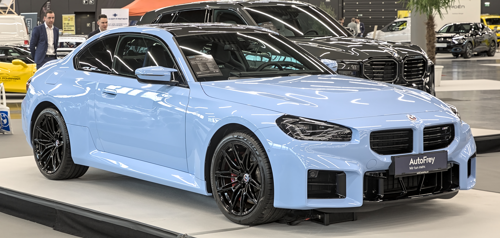
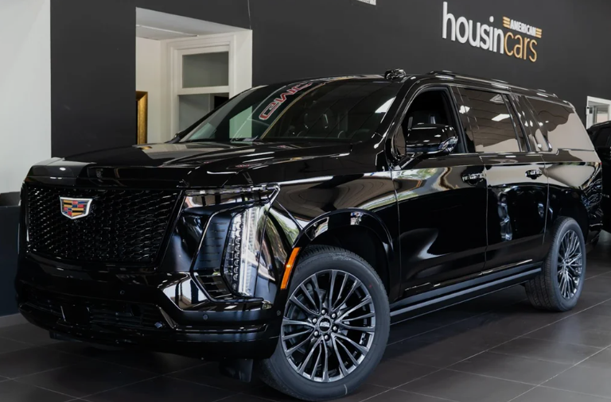
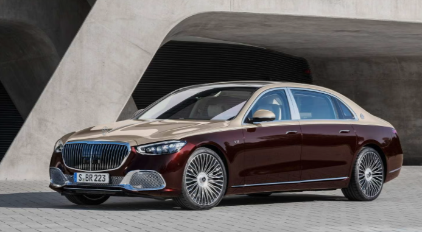

DEPORTIVO
Vehículos de alto rendimiento
Se caracterizan por priorizar el rendimiento, la respuesta del motor y la experiencia de conducción.
Ver categoría →AUTOMÓVILES
Explorá algunas de las categorías más conocidas y conocé qué características las diferencian.

Se caracterizan por priorizar el rendimiento, la respuesta del motor y la experiencia de conducción.
Ver categoría →
Son una opción popular para quienes buscan mayor espacio interior y una posición de conducción elevada.
Ver categoría →
Ofrecen comodidad y un tamaño práctico para diferentes situaciones de uso.
Ver categoría →